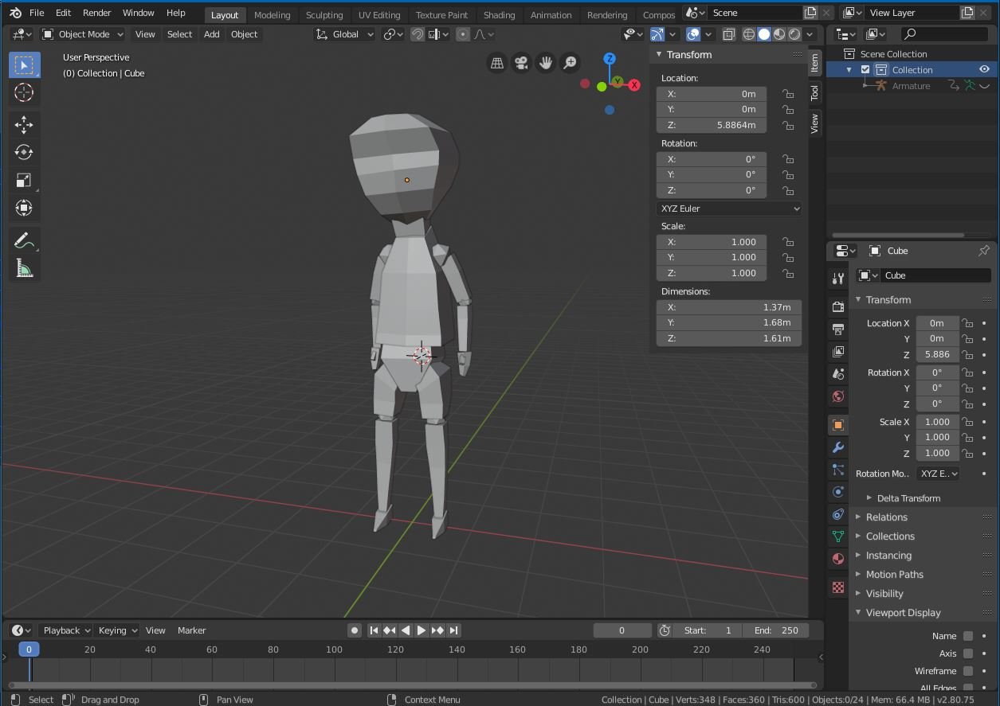
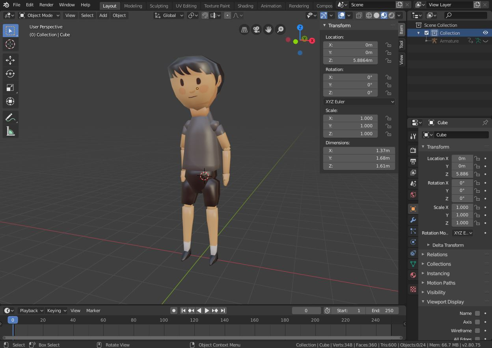
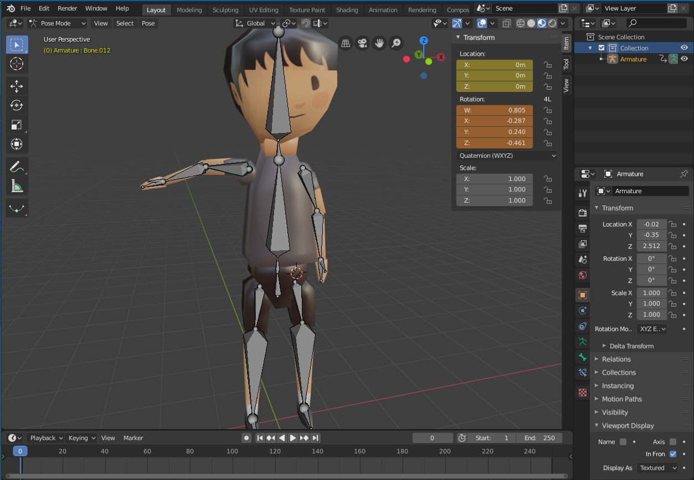
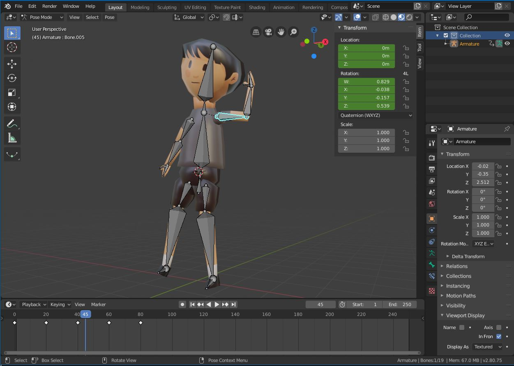
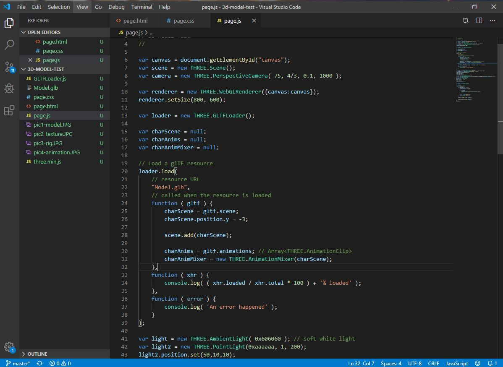
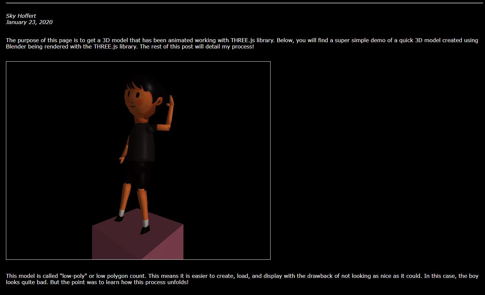

The purpose of this page is to get a 3D model that has been animated working with THREE.js library. Below, you will find a super simple demo of a quick 3D model created using Blender being rendered with the THREE.js library. The rest of this post will detail my process!
Completed model/animation!
This model is called "low-poly" or low polygon count. This means it is easier to create, load,
and display with the drawback of not looking as nice as it could. In this case, the boy looks
quite bad. But the point was to learn how this process unfolds!
My first task was to create a 3D model. Now, I do have some experience using Blender on and off
over the past year or so. My background with it definitely made the process easier, although I
did follow a tutorial on YouTube that guided me through. The model was made using the texture
as a guide. Credit for the texture goes to Robin C. It can be found
here.

Completed model in Blender software.
Once the model was complete, the texture that I was using to create the model could be applied.
To do this, I followed the UV unwrapping routine to apply the image texture to the faces of
each polygon. It was pretty straightforward since there are not many details in this model. In
the image below, smooth shading makes the model more appealing.

Model with texture applied in Blender.
Now that the texture has been applied, we can start "adding bones" to the polygons. Doing this
is called "rigging" a model. It took some time, but again I followed a YouTube tutorial for
rigging a character model. Once the "rig" is in place, I could start moving the bones around to
experiment with different poses.

Rigged model in Blender.
Now comes the time to animate! I wanted to do a simple waving animation with some movement. So
I made him sort of shift his weight onto the opposite foot and then go back to the original
position. This results in a clean looping pattern.
Animating is all about adding "keyframes" over a timeline. You choose positions at certain
times that the model should hit and the software will smoothly move the bones between the time
for each keyframe. This is a pretty common technique and honestly pretty simple! At the bottom
of this image you can see I have just 5 total keyframes. If you watch the animation it can be
clearly seen when each keyframe transition occurs.

Animating the model in Blender.
Now comes the part I am best at - programming the model to work in the browser! I used a
popular library called "THREE.js" to load and animate the model. I will admit that if you
haven't used this library before it can be a bit intimidating. But really all you need to do
is find the right examples online and search for any problems that may come about... and be
prepared to spend a lot of time tinkering with the code until things work. But after an hour or
so, I was able to write some decent, quick code that loads the model (as a GLTF/GLB) file and
initiates the animation.

Programming in VS Code.
And now the final part, writing this blog post! I'm carefully navigating the timeline as to not
cause a chicken-and-the-egg issue. The picture was taken while a bit of the post was written,
but there is much more written as I actually enter the contents into the html file.

Time bending picture of the beginning of this post.
That wraps everything up! Overall this was an awesome learning experience. I would highly
recommend that if you are interested in game development or modeling or anything else related
to this process that you go through it to figure out for yourself how everything works. The
end result is being able to watch your animation in the browser anywhere on
any device. Pretty cool!
Be Curious!
© 2020 Sky Hoffert